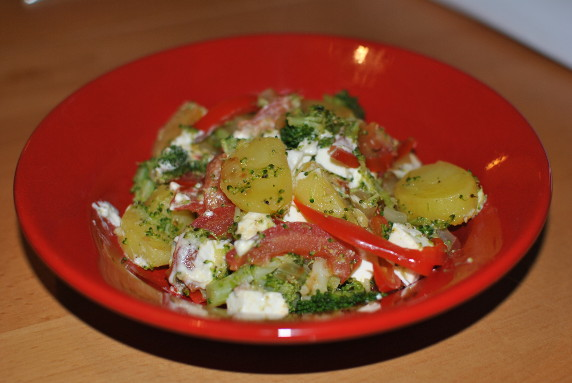

Gemüsepfanne mit Feta

- Zubereitung: ca. 40 Minuten
- Für 4 Personen
Zutaten
- 600 g kleine festkochende Kartoffeln
- 300 g Brokkoli
- 1 große rote Paprika
- 2 Tomaten
- 1 Zwiebel
- 2 EL Butterschmalz
- 200 g Feta
- Paprikapulver, rosenscharf
- Salz
- Pfeffer
Zubereitung
- Kartoffeln waschen, in Salzwasser 20 Minuten garen. Brokkoli waschen, putzen und in
Röschen teilen. In kochendem Salzwasser drei Minuten blanchieren, eiskalt abschrecken.
Paprika waschen, putzen und in feine Streifen schneiden. Tomaten waschen, vierteln,
entkernen und in Spalten schneiden. Zwiebeln schälen und klein würfeln.
- Kartoffeln abgießen, ausdampfen und etwas abkühlen lassen, schälen und in
Scheiben schneiden.
- Schmalz in einer großen Pfanne erhitzen. Die Kartoffelscheiben hineingeben, mit
Zwiebelwürfeln bestreuen und fünf Minuten anbraten. Dann Paprika und Brokkoli hinzufügen,
wenden und circa drei Minuten weiterbraten. Tomaten unterheben, mit Salz, Pfeffer und
Paprikapulver würzen. Zerbröckelten Feta aufstreuen.